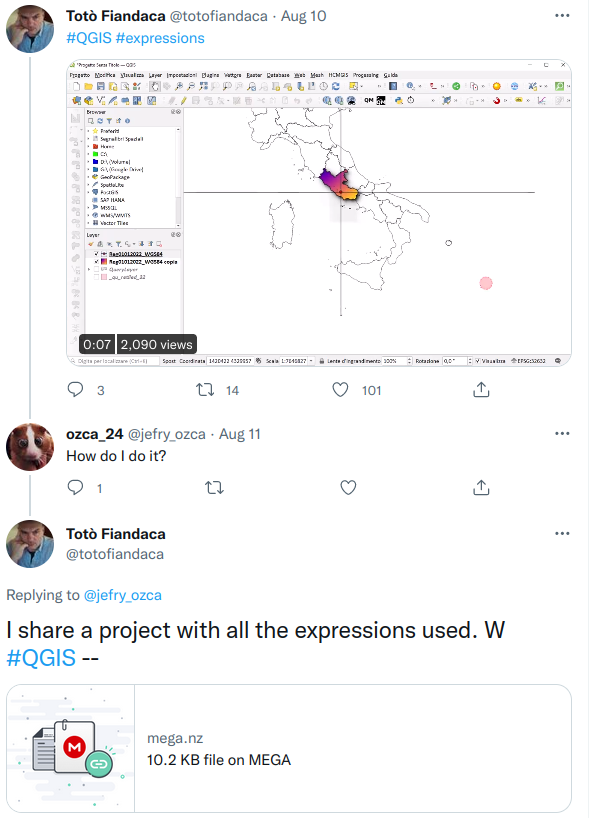
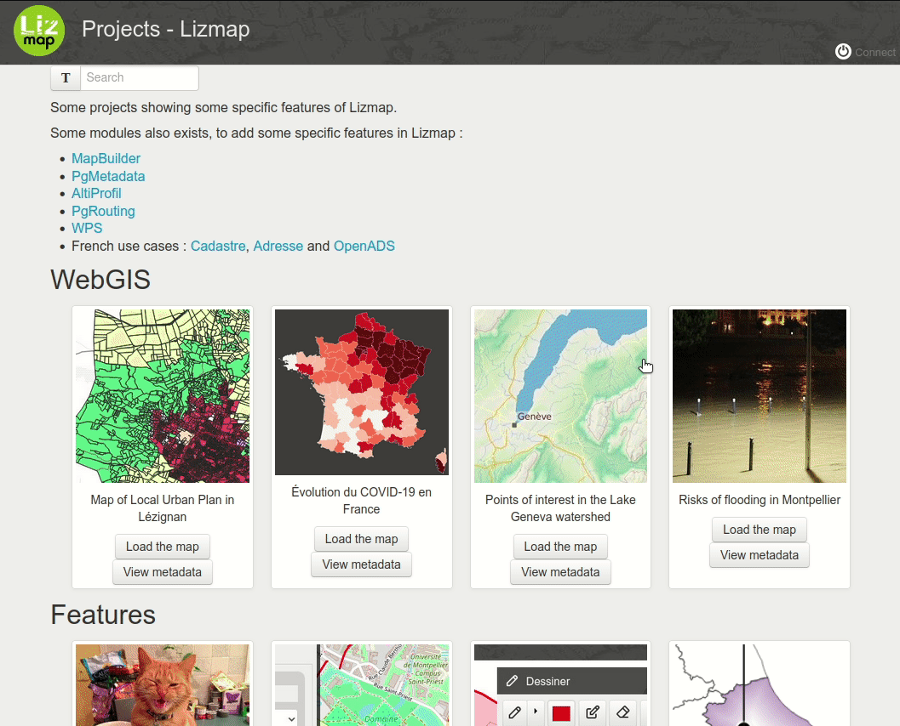
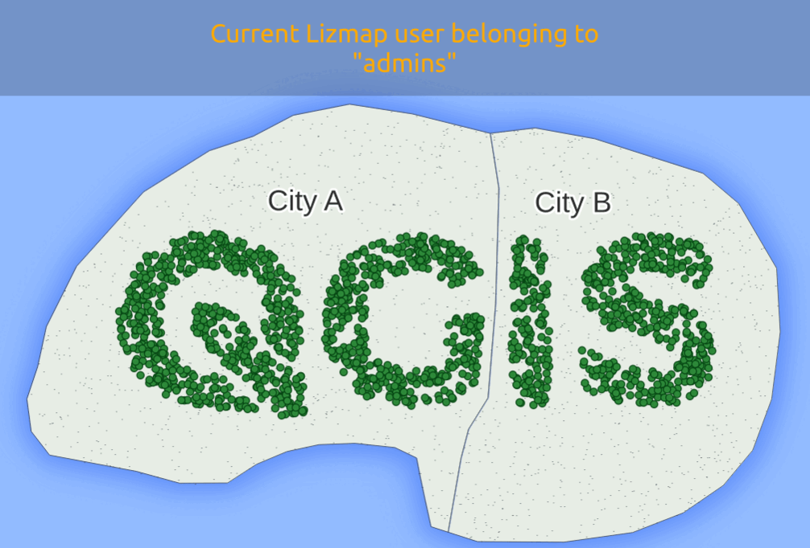

## 3liz
* Fondé en **2007**
* Initialement SSLL SIG
* Développement autour de PostGIS, MapServer, OpenLayers, etc
* Depuis **2011**
* Éditeur Open Source avec la publication de Lizmap
* Centré autour de QGIS / QGIS Server / PostgreSQL+PostGIS / Lizmap
💎
## 3liz
* Toujours **Open Source** https://github.com/3liz/
* Contributeurs QGIS **core** (essentiellement serveur)
* Hébergement, Installation, Maintenance, Développement, Formation, Conseil, Assistance

## PostgreSQL / PostGIS
* SGBD Robuste 🥊
* Base d'un SIG performant 🥇
* Très bien intégré avec **QGIS**
* Permet de construire des **modèles** métiers
* Permet d'intégrer du **contrôle** de saisie
* Permet de **consolider** les données
* Permet d'effectuer des **calculs** complexes

## QGIS Bureautique
Solution SIG complète
* **Administration** de données PostGIS (import, export, SQL)
* Mise en place de couches et de **relations**
* **Symbologie** et étiquettage des couches
* Construction de **formulaire** pour faciliter l'ajout et la saisie de données
* Mise en page d'**impression** PDF
* ...

## QGIS Bureautique

## QGIS Bureautique

## QGIS **n'est pas seulement** une application bureautique
C'est aussi :
* Un serveur SIG 🚀 **QGIS Server**
* Des applications mobiles 📱 **QField** et Mergin
* Un lanceur d'algorithmes ⚙ de manipulation de données **qgis_processing**
Ils exploitent tous le même cœur 💎

## QField et QfieldCloud

* **QField** permet de créer des outils de saisie hors-ligne à partir d’un projet QGIS
* Une interface simple pensée mobile
* Proposer le même rendu qu'en bureautique
* **QFieldCloud** permet de synchroniser et de fusionner les données collectées avec
QField
* Partage de projets de saisie
* Versement des données récoltées
## QGIS Server
* Utilise des projets QGIS
* Propose le même rendu 🚀
* La certification OGC depuis 2018 : WMS, WFS, WMTS...
* **Rapport de tests récent**: http://test.qgis.org/ogc_cite/ogcapif/latest/report.html

## Au dessus de QGIS Serveur
* Lizmap Web Client
* **Préparer sur QGIS bureautique, déployer sur Lizmap**
* Github, Open Source : Mozilla Public Licence
* **Proxy** à QGIS Serveur
* Administration Web pour la gestion des utilisateurs et droits.
* Toutes les autres configurations dans QGIS bureautique.

## Historique Lizmap
* Créé comme un simple **visualiseur web** de projet QGIS
* Basé sur QGIS Serveur et ses capacités OGC : WMS, WFS, WCS...
* A évolué pour devenir un générateur d'**applications SIG Web complètes**
en intégrant de nombreuses fonctionnalités natives de QGIS : symbologie, relations, impression, formulaires.

## Comment faire
1. Créer un **projet QGIS** avec quelques couches
2. Utiliser le **plugin Lizmap** pour configurer certaines options spécifiques au Web (étendue, échelles, outils disponibles).
3. Et **Déposer** sur le serveur Lizmap
**\o/** Vous avez une carte web basée sur le projet QGIS **\o/**

## Publier

## La force de QGIS Serveur
Quelques jours avant le FOSS4G 2022, dans la timeline 🐦 de [@etrimaille](https://twitter.com/etrimaille) 🤔

La force de QGIS Serveur
Oh, mais... Dans l'Open Source, on partage les astuces 🤗

La force de QGIS Serveur
A priori, il n'ai rien eu à faire pour que cela fonctionne sur le web 😋 Disponible sur https://demo.lizmap.com/, téléchargez-le !

## La force de QGIS Serveur
* L'auteur original **n'avait pas prévu** de publier son projet QGIS sur le web au départ.
* **Mais**, grâce à QGIS Serveur, dont la base de code est la même que celle de QGIS Desktop,
99% du travail avait déjà été fait pour le publier et le partager sur le Web. 🚀

## Cas d'usage
### Quelques exemples pour démontrer les principales caractéristiques
## Meylan - Portail cartographique
* Ville de la Métropole de Grenoble
* Publier des cartes thématiques pour les citoyens
* Le plaisir des yeux, dans un souci de simplicité
* https://geo.meylan.fr/
## Calvados et Gard - Thème personnalisé
* Département normand et d'occitanie
* Publier des cartes thématiques pour les citoyens
* Promotion des paysages et monuments
* https://atlas.calvados.fr/ et https://sig.gard.fr/
## Aduga - Popups
### Identifié un élément
* **Agence d'urbanisme**
* Mettre en avant les chiffres clés des **parcs d'activités**
* Utilisation des **infobulles & expressions** QGIS
## Occupation du sol - Dataviz
* GEOCS - **Guadeloupe**
* **Valorisation** des données d'Occupation du sol
* **Evolution** des données d'Occupation du sol
* https://cartophyl.lizmap.com/demo/index.php/view/map/?repository=cartophyl&project=indic_GP
## Borbonica - Dataviz
* **Parc national** de La Réunion
* Publier un **tableau de bord** sur les données d'observation floristiques et faunistiques
* Utiliser le module **Lizmap dataviz** avec des vues PostgreSQL
* https://www.borbonica.re/
## Edition de couches
La configuration des formulaires dans QGIS bureautique peut être **très** puissante !
Grâce à de nombreuses fonctionnalités telles que :
* la conception par glisser-déposer,
* la visibilité par expression,
* les contraintes,
* les outils d'édition
* ...
Edition de couches
Différents types d'outils d'édition natifs de QGIS Bureautique : sélecteur de date, liste déroulante, saisie de texte, case à cocher...

Edition de couches
Contraintes à l'aide d'une expression QGIS

Edition de couches
Contraintes à l'aide d'une expression QGIS

## Edition de couches
Utilisation des **expressions** QGIS
* Valeur par défaut
* Contrainte
* Règle d'affichage des groupes
* Listes en cascade
* Filtrage géographique de listes
## Edition de couches

## Edition de couches
Capacités complémentaires
* **Géolocalisation**, contrôle de la précision du GPS pour les relevés **terrains**
* **Accrochages** aux géométries éxistantes
* Barre d'outils
* Inversion de lignes
* Réduction d'une surface
* Déplacement, Rotation
* ...
## Chats - relations et atlas
* Données publiques **Movebank** sur les positions des **chats domestiques**
* Montrer **les relations entre les données**
* Utilisation des **relations QGIS** des propriétés du projet
* Ajout des **tables d'attributs** dans le plugin Lizmap
* Itération sur les chats avec l'**outil atlas Lizmap**

## Grand Narbonne - trouver des produits locaux
* Promouvoir les productions locales
* Promouvoir les magasins locaux
* Promouvoir les produits locaux
* https://lizmap.legrandnarbonne.com/index.php/view/map/?repository=public&project=circuit_court
## Hérault - trouver des lieux d'aide au numérique
* Promouvoir les lieux d’accès à l’administration et aux services en ligne
* Promouvoir les lieux adapatés aux besoins
* Promouvoir les lieux de proximité
* https://numeriquepourtous.herault.fr/index.php/view/map/?repository=in1&project=CD_34_Inclusin_Num
## Contrôle des accès
### Différents niveaux de contrôle 🛑
## Contrôle des accès
* Utilisateurs et groupes (interne, LDAP, SAML)
* Différents niveaux de filtrage et de contrôle d'accès :
* Accès ou non un groupe de projets
* Accès ou non à un projet
* Accès ou non à une couche de données
* Accès ou non aux fonctions d'édition
* Filtrage des données en fonction de l'utilisateur (soit par attribut, soit par intersection spatiale).
Contrôle des accès
- Spatial filtering, like a mask layer

## Étendre Lizmap
### Avec quelques modules supplémentaires 🌟
## Module Constructeur de carte
* **UNIMA**
* Réutilisation de projet comme source de couches
* Assemblage des couches : ordre, style, transparence
* Impression rapide
* Catalogue utilisateur
## Module Cadastre
* **Centre Morbihan Communauté**
* **Recherche** de parcelles par identification ou propriétaire
* Edition de **relevés** parcellaires et de proriété
* **Infos parcellaires** : Propriétaires, subdivisions, locaux
## Module Adresse
* Conseil Départemental du calvados
* Accompagnement des communes
* **Aide à la saisie** des adresses (Lizmap + Postgres)
* Export de **Base Adresse Locale** (BAL) pour la BAN
## Module AltiProfil
* Développé par un utilisateur de Lizmap à la Réunion (Arnaud Vandecasteele) https://github.com/arno974/lizmap-altiProfil

## Module Web Processing Service
* Pour exposer le module traitements de QGIS (certains algorithmes) sur le web

## Étendre Lizmap
### Avec du **JavaScript** supplémentaire
https://github.com/3liz/lizmap-javascript-scripts
Visualiseur Mapillary
Initié par un utilisateur de Lizmap en Italie (Francesco Bursi), et complété sur demande de Lons-le-Saonier.

## Une communauté en plein essor
* Différents types d'utilisateurs
* entreprises privées (éolien, environnement, etc)
* organisations publiques (CD, EPCI, AU, etc)
* centres de recherche
* Principale contribution de la communauté **Open Source**
* **Traductions**
* Des scripts **JavaScript** supplémentaires
* Entraide sur la **liste de diffusion Lizmap** et gis.stackexchange.com
* Rédaction de la **documentation**
* ...
*
## Traductions
* https://www.transifex.com/3liz-1/lizmap-locales/dashboard/
* 25 langues sur Transifex
18 langues ont un taux de traduction supérieur à 70%
🇬🇧 🇨🇿 🇫🇷 🇵🇹 🇯🇵 🇷🇺 🇺🇦 🇮🇹 🇵🇱 🇷🇴 🇩🇪 🇸🇰
🇸🇪 🇧🇷 🇪🇸 🇳🇱 🇭🇺 🇫🇮 🇬🇷 🇳🇴 🇦🇷 🇮🇩 🇸🇮
Traductions
2 mars 2024

## Librement utilisable et utilisé
* Groundwater mapping **Western cape, South Africa** https://www.groundwaterinfo.africa
* **Indian ocean** environment survey http://homisland.seas-oi.org/
* **Switzerland** https://www.wandelderzeit.ch/
* Faunalia (**Italy**) https://lizmap.faunalia.eu/
* Consorzio Toscana Nord (**Italy**) http://geoportale.cbtoscananord.it
* **World** Live QField users map: http://demo.qfield.org/websig/lizmap/www/
* Município de Arraiolos (**Portugal**) http://pdm-revisao.municipioarraiolos.pt/
* SAERI (**South Atlantic**): https://data.saeri.org/saeri_webgis/lizmap/www/
* IRSTEA Earth Observation: https://mdl4eo-cartes.irstea.fr
* Bonelli eagle 2017-2019 http://lizmap.aigledebonelli.fr/websig/lizmap/www/
## Feuille de route des développements
## Version actuelle : 3.7
* Amélioration des outils de dessins 🖌
* Améliroation des outils d'impression 🖨
* Amélioration de l'outil d'actions ⚙
* Amélioration de l'arbre des couches 🌲
* MGRS 🌐
* ...
## La Feuille de route
* La prochaine version **3.8** est en développement 🚀
* Possibilité de rendu fusionné 🗺
* Amélioration de la gestion des relations 🖊
* Amélioration de l'outil d'accrochage 🧲
* ...
## Efforts continus
### sous le capot
* Amélioration du code
* Migration de certains composants cartographiques vers **OpenLayers 9**
* Tests unitaires 🎳
* Tests **End2End** 🎳
## End2end

# Liens
* Demo: https://demo.lizmap.com
* Site web: https://lizmap.com
* Documentation https://docs.lizmap.com
* docker-compose https://github.com/3liz/lizmap-docker-compose
* Pour contribuer
* RFC https://github.com/3liz/lizmap-rfc
* web-client https://github.com/3liz/lizmap-web-client
* plugin https://github.com/3liz/lizmap-plugin
* documentation https://github.com/3liz/lizmap-documentation
* traduction https://www.transifex.com/3liz-1/